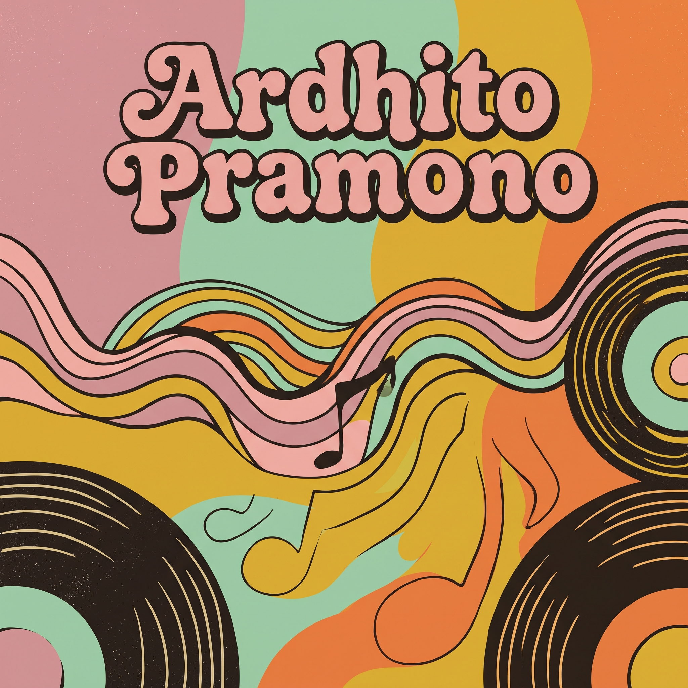
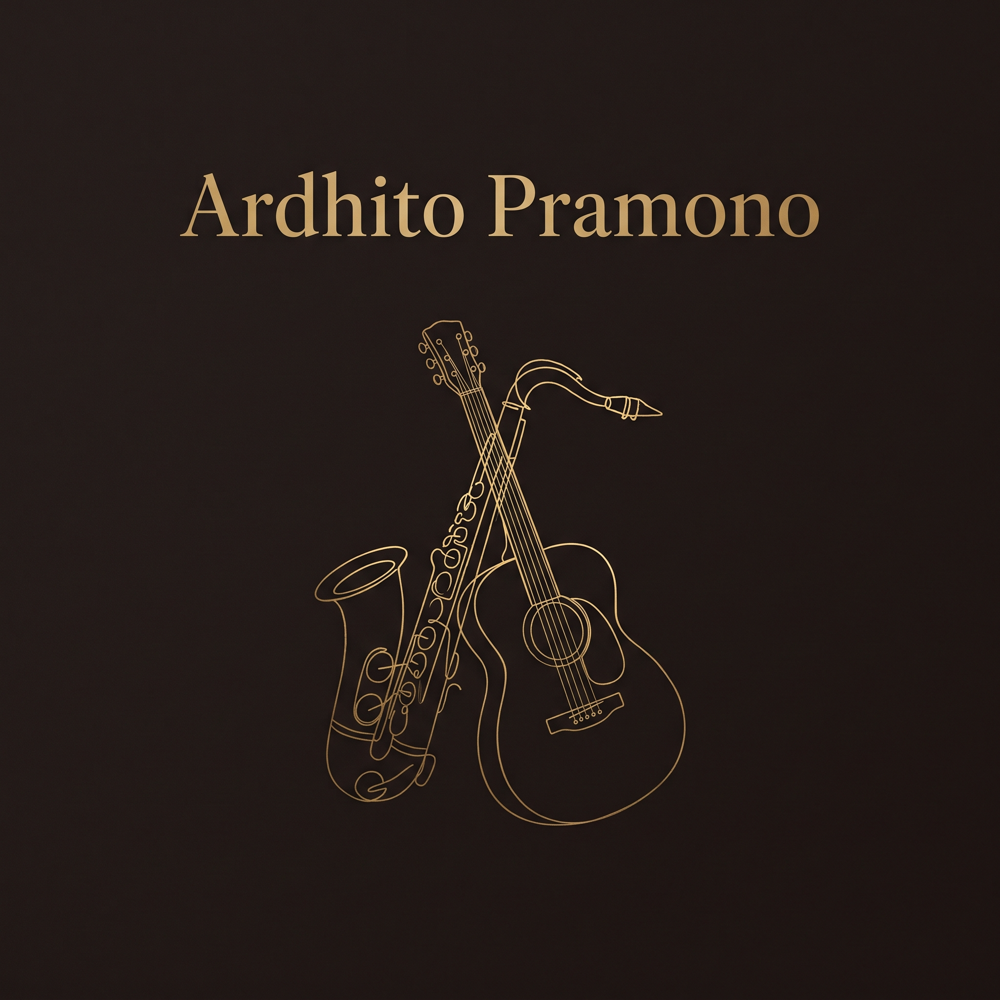

Ardhito Pramono adalah pencerita yang meracik nostalgia menjadi ruang hangat di tengah riuhnya zaman. Lewat denting piano yang intim, petikan gitar yang lembut, serta sentuhan jazz dan pop retro yang khas, ia berhasil menghidupkan kembali estetika musik klasik dengan rasa yang tetap relevan. Setiap lagunya bagaikan lamunan di penghujung hari—menghadirkan melodi yang tenang, liris, dan sarat akan atmosfer romansa yang elegan.
Bagi Gen Z yang tumbuh di tengah cepatnya arus modernitas, karya-karya Ardhito hadir sebagai tempat rehat yang menenangkan. Lirik-liriknya yang puitis namun jujur dan mudah dipahami mampu menyuarakan riak emosi anak muda: tentang kerinduan, pencarian jati diri, hingga patah hati yang dirayakan dengan indah. Lewat keautentikan karya dan nuansa analog yang diusungnya, Ardhito sukses menjembatani keindahan musik era lampau langsung ke dalam ruang dengar generasi masa kini.
2.5M
Spotify Followers
1.8M
Monthly Listeners
3
Official Full Albums
Discography
craziest thing happened in my backyard
Listen Now